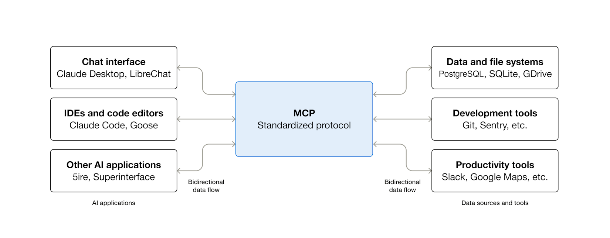

Automating Issue Triage
Travis Lyons
Field Engineer @ Sourcegraph
What do you think of when you hear Agents?


How do YOU define an agent?
The BIG Secret
The BIG Secret
class Agent:
def run(self):
while True:
user_input, ok = self.get_user_message()
if not ok:
break
conversation.append(user_input)
message = self.run_inference(conversation)
conversation.append(llm_response)
class Agent:
def run(self):
while True:
user_input, ok = self.get_user_message()
if not ok:
break
conversation.append(user_input)
message = self.run_inference(conversation)
conversation.append(llm_response)

while True:
user_input, ok = self.get_user_message()
if not ok:
break
Wait, that's it!?
Don't believe me?
Don't believe me?
How to Build an Agent
Thorsten Ball, April 15, 2025
Tools
Tools

Tools
"Tools are a new kind of software which reflects a contract between deterministic systems and non-deterministic agents."
Anthropic: Writing Tools For AgentsTools
❯ amp tool show web_search
# web_search (built-in)
Search the web for information relevant to a research objective.
To get more information from a result URL or to ensure the latest contents are fetched, use the `read_web_page`
on a URL.
## When to use this tool
- When you need to search for precise documentation, especially of the newest or specific versions of an API
- When you need up-to-date information from the web
Tools
Upcoming Events
Interestingly, there is a Lansing Codes meetup happening tonight (Tuesday, November 18, 2025) at 6:00 PM.
Topic: "Automating Coding Agents To Accelerate Issue Triage"
Speaker: Travis from Sourcegraph (discussing the Amp coding assistant)
Location: In-person (likely at their usual venue, though details are on their Meetup pa
Model Context Protocol (MCP)
an open-source standard for connecting AI applications to external systems.
Model Context Protocol (MCP)

How do YOU define an agent?
How do YOU define an agent?
Agents
Agents
Loop
Agents
Loop
Tools
Agents
Loop
Tools

Building an Agent
Building an Agent
Why you probably came to listen to me

A Python agent framework designed to help you quickly, confidently, and painlessly build production grade applications and workflows with Generative AI.
https://ai.pydantic.dev
Instructions
Tools
Dependencies
Output
Instructions
Instructions
Allow you to provide prompts to an agent definition as:
- Static instructions
- Dynamic instructions
- Runtime instructions
Instructions
def _register_instructions(self) -> None:
"""Register agent instructions as separate methods."""
self.agent.instructions(base_instructions)
self.agent.instructions(github_context_instructions)
if self.sg_toolset:
self.agent.instructions(sourcegraph_mcp_instructions)
self.agent.instructions(output_requirements_instructions)
Tools
Tools
Tools provide a mechanism for models to perform actions and retrieve extra information to help them generate a response
Tools
They enable the model to take some action and use the result, when it is impractical or impossible to put all the context an agent might need into the instructions
Tools
- WebSearchToolAllows agents to search the web
- CodeExecutionToolEnables agents to execute code in a secure environment
- ImageGenerationToolEnables agents to generate images
- UrlContextToolEnables agents to pull URL contents into their context
- MemoryToolEnables agents to use memory
- MCPServerToolEnables agents to use remote MCP servers
Tools
@agent.tool_plain
def roll_dice() -> str:
"""Roll a six-sided die and return the result."""
return str(random.randint(1, 6))
@agent.tool
def get_player_name(ctx: RunContext[str]) -> str:
"""Get the player's name."""
return ctx.deps
Dependencies
Pydantic AI uses a dependency injection system to provide data and services to your agent's system prompts, tools and output validators
Dependencies
@dataclass
class MyDeps:
api_key: str
http_client: httpx.Client
agent = Agent(
'openai:gpt-5',
deps_type=MyDeps,
)
Dependencies
agent = Agent(
'google-gla:gemini-2.5-flash',
deps_type=str,
system_prompt=(
"You're a dice game, you should roll the die and see if the number "
"you get back matches the user's guess. If so, tell them they're a winner. "
"Use the player's name in the response."
),
)
dice_result = agent.run_sync('My guess is 4', deps='Anne')
print(dice_result.output)
#> Congratulations Anne, you guessed correctly!
Output
class CityLocation(BaseModel):
city: str
country: str
agent = Agent('google-gla:gemini-2.5-flash', output_type=CityLocation)
result = agent.run_sync('Where were the olympics held in 2012?')
print(result.output)
#> city='London' country='United Kingdom'
Instructions
Dependencies
Tools
Output
Instructions
Dependencies
What do we need to consider to utilize all these components to both effectivly, and efficiently triage CI/CD workflows you may not be responsible for?
Tools
Output
Instructions
Dependencies
What do we need to consider to utilize all these components to both effectivly, and efficiently triage CI/CD workflows you may not be responsible for?
Tools
Output
Instructions
Dependencies
What do we need to consider to utilize all these components to both effectivly, and efficiently triage CI/CD workflows you may not be responsible for?
Tools
Output
Instructions
Dependencies
What do we need to consider to utilize all these components to both effectivly, and efficiently triage CI/CD workflows you may not be responsible for?
Tools
Output
Instructions
Dependencies
What do we need to consider to utilize all these components to both effectivly, and efficiently triage CI/CD workflows you may not be responsible for?